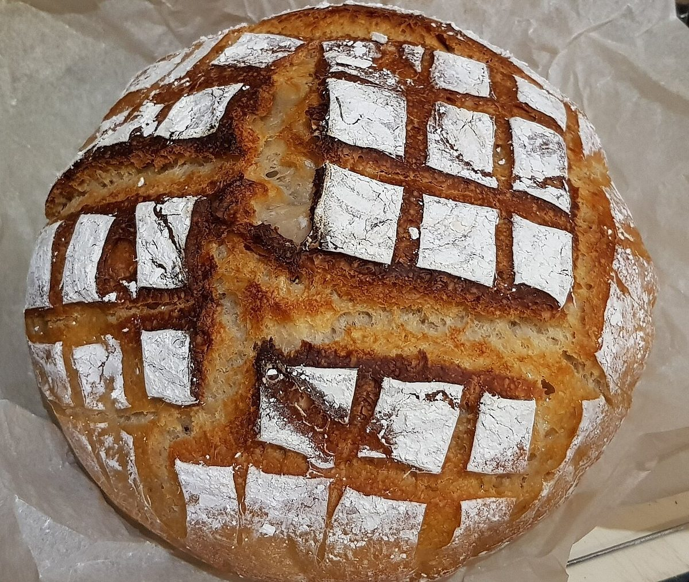

パン屋 / 佐賀県武雄市山内町
Haru Pan
佐賀県武雄市山内町にあるパン屋「Haru Pan」のご案内ページです。営業時間やメニューなど、詳しいことは準備中。確認できているのは、所在地・電話番号・Instagramのアカウントです。
制作側の連想
このページは、地面にチョークで描く「けんけんぱ」を思い浮かべて作りました。1〜5の5ページを、ケン(片足)とパ(両足)で進むマスに見立てています。制作側の連想で、お店の理念・由来とは無関係です。店名の由来も分かりません。




お店のこと(確認できたものだけ)
写真は国外または撮影地不明のフリー素材のイメージです。お店・商品を写したものではありません。
| 所在地 | 〒849-2303 佐賀県武雄市山内町大字三間坂甲14720-1 |
|---|---|
| 電話 | 0954-45-2770 |
| 営業時間 | 準備中 |
| 定休日 | 準備中 |
| メニュー・価格 | 準備中 |
| ご予約 | 準備中 |
| 駐車場 | 準備中 |
| @harupan_yamauchi |